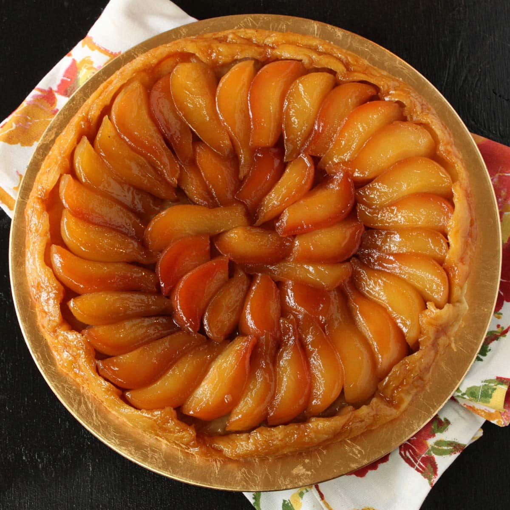

Tarte Tatin is a famous French upside-down caramelized apple tart with a rich history that lends it a special charm. This simple yet elegant dessert is known for its deeply caramelized apples and flaky crust. Here’s a look at its history, a traditional recipe, and tips to make it perfect.
The Tarte Tatin was accidentally created in the 1880s by the Tatin sisters, Stéphanie and Caroline, who ran the Hotel Tatin in Lamotte-Beuvron, a small town south of Paris. The story goes that one day, Stéphanie was making a traditional apple pie but accidentally left the apples cooking in butter and sugar for too long. In an effort to save the dish, she placed the pastry dough over the caramelized apples and baked it. When inverted onto a serving plate, the tart was a delightful surprise, with the apples beautifully caramelized. It became a signature dish at their hotel and quickly gained popularity in Paris and beyond.